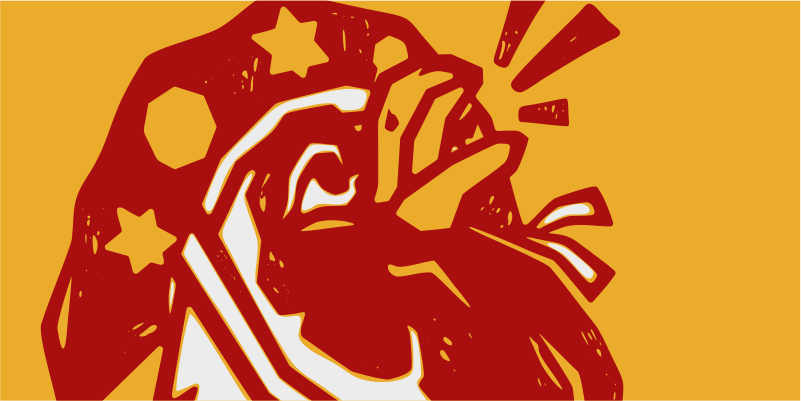
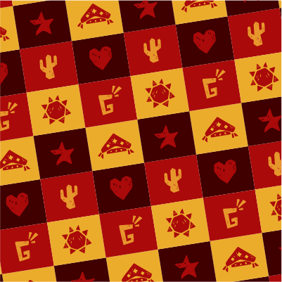
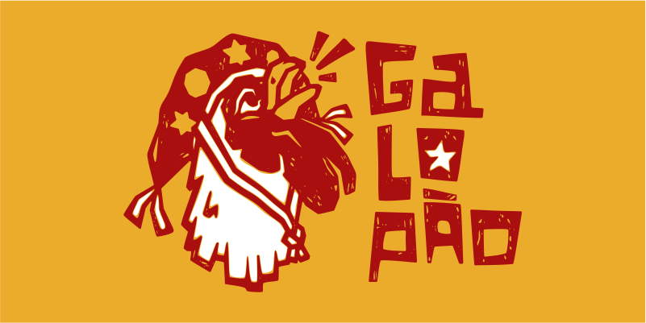
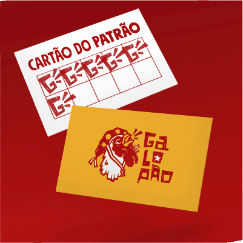
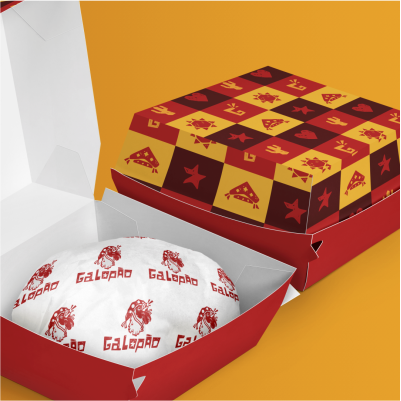
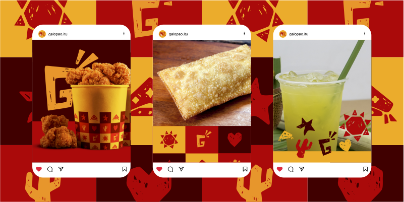
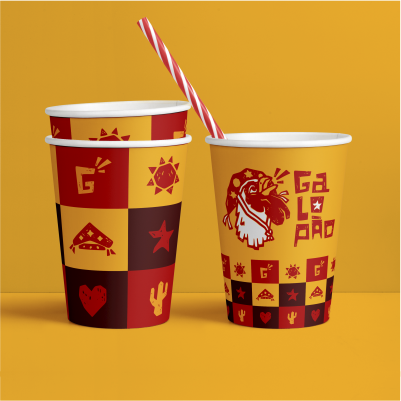
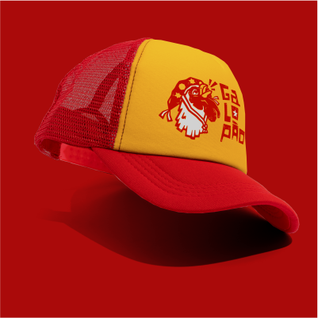

Galopão
2022- Ilustração,
- Embalagem,
- Design Gráfico
"Galopão" é um restaurante de rua sobre rodas que une as duas paixões do seu fundador: Comida e o Nordeste! A proposta central é valorizar suas origens.
As cores, símbolos, tipografia e ilustrações foram inspirados no povo irreverente, criativo e bem-humorado que é o nordestino.








